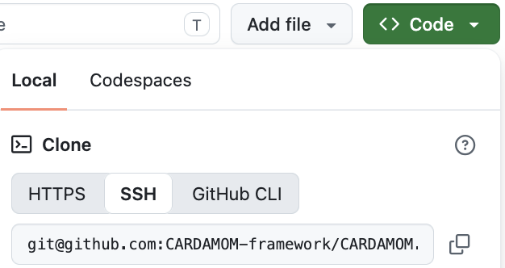

Getting Started with CARDAMOM
“Installing” CARDAMOM
Instructions here are for Mac, and transfer to linux/unix. No windows installation instructions provided at the moment.
The steps below guide you through “downloading” (Step 1) and “compiling” (Step 2).
CARDAMOM library dependencies are proactively kept at a minimum, and you may not need to
Section 1. Git clone from Github
Step 1. Navigate Type
cd /path/to/your/environment/in your mac terminal, this can be your default home directory or another directory for storing CARDAMOM code.Step 2. Type ``git clone git@github.com:CARDAMOM-framework/CARDAMOM.git” in terminal window. If successful, you will have a newly cr/path/to/your/environment/CARDAMOM folder.
Additional resources For original source, go to https://github.com/CARDAMOM-framework/CARDAMOM, and click on green “Code” button, and select git clone with ssh.


The “ssh” option will provide the “git@github.com:CARDAMOM-framework/CARDAMOM.git” text used in Step 2, but you may choose do download code differently
Warning
Do not use .zip approach (!) unless you only intend to download code once, and do not anticipate collaborating with team.
Section 2. Compiling CARDAMOM
Step 1 Navigate to your CARDAMOM folder “cd /path/to/your/environment/CARDAMOM”
Step 2 run “./BASH/CARDAMOM_COMPILE.sh”. More likely than not, you will need to install some libraries with brew install.
Step 3 (if needed) install missing libraries (see Section 3), and repeat Step 2 until successful. See Tips and FAQ to debug this step
Section 3. Possible library installation requirements
If you don’t already have these, you may need to follow some of the following steps
Note
Install homebrew (if you don’t already have it: https://brew.sh)
Install netcdf library (if you don’t already have it)
Type
brew install netcdfin terminal window (Mac), see step (1) for installing brew.Anthony, Alex:
setenv('CARDAMOM_NC_CONFIG_PATH','/usr/local/bin/nc-config')For PC: no supported solution yet… (Paul: add potential windows solution)
You may also need:
brew install python(even for matlab users)Install pip on macOS: https://www.geeksforgeeks.org/how-to-install-pip-in-macos/
pip3 install netcdf4
Core dependency summary
Core Requirements:
C Compiler (GCC or compatible) - Used to compile the C source files - Default: gcc - Alternatives supported: any C compiler (clang, icc, etc.)
NetCDF C Library - Critical dependency for reading/writing scientific data files - Requires both the library files and the nc-config utility - The script uses nc-config to get compiler flags and link flags
Math Library (-lm) - Standard C math library (usually included with compiler) - Required for mathematical operations
Standard Build Tools - bash (already present on macOS/Linux) - which command (for finding nc-config)
Section 4. Tips
If you are working on a new machine, make sure to re-install required packages like python, homebrew, etc.
Section 5. FAQ
^^^
Q: “I get ‘Error: could not find any nc-config command.’ or something like that, what do I do?”
A: Install netcdf using homebrew:
brew install netcdf
Section 5. CARDAMOM Github User Must Read
After you clone the CARDAMOM repository to your local, please take a minute to go through the first section in CARDAMOM_GIT_MUST_READ.md. We recommend all users to follow the instructions in order to effectively maintain the CARDAMOM github environment.